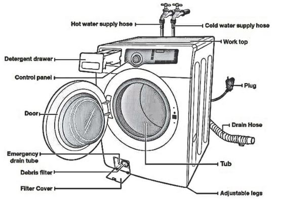

Washing machines are one of the most indispensable appliances in our homes. Especially if you have a large
family and too much laundry to wash .
But have you ever wondered about how your washing machine works and what’s
the inside of it?
So, find out more about how your washing machine works, how you have to maintain it properly and how to fix if
it breaks down.
Firstly, meet the parts of your washing machine
The washing machine mechanism is quite simple actually.
First, it fills the machine with water, sloshes your
clothes in the soapy water for a while, rinse and spin to partially dry your clothes.
The drum which fills up
the machine with water, is the main component of a washing machine.
The washing machine has an inner and an
outer drum.
An inner drum is where you put your clothes.
It rotates when you touch it and there are holes in the
drum.
The outer drum is invisible when you look inside of your washer. It is water tight and hold water while
the inner drum rotates. It prevents the washer from leaking .
These hollows allows the water to come in and wash
the clothes.
These two drums are one of the most important parts of your washing machine, but there are other parts which
equally important for your washing machine.
These include:

Agitator: An agitator is a paddle in the middle of the inner tub and allow to turn the clothes around in the
soapy water.
Paddles: Paddles help move and slosh the clothes around during a wash cycle.
A programmer: A programmer is a mechanical or electronic control mechanism which controls the washing machine
making the parts of the it go through a series of steps to wash, rinse and spin drying.
Thermostat and heating element: Thermostat and heating element controls the water temperature and heats up the
water to the desired temperature.
Valves and pipes: These allow the clean water in and dirty water out of the washing machine.
Pump: A pump removes the water from the drum after a washing cycle.